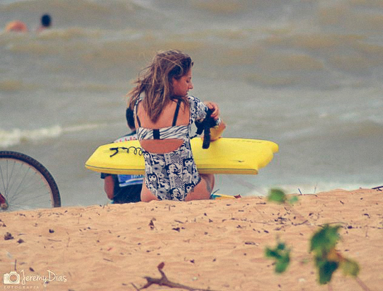

2 min 30 seg de leitura
Bodyboarder Alexandra Ereiro, a Xandinha, traz segundo relato e fotos de trips pelo Norte do Brasil.
Na terça-feira, 8 de setembro, um dia depois do feriado da semana da pátria, fechamos novamente uma barca para a 'Moca'.
Partimos eu, o surfista Severino Junior, meu parceiro de surf, e mais o fotógrafo Jeremy Dias, correspondente do Craud.net em Belém do Pará, com destino à bucólica Mosqueiro, distrito da capital, para surfar e catalogar um novo matéria, para a segunda parte da matéria “Meu mar de água doce”.
Todos com muita vibe na alma e com o pensamento positivo: se divertir e, ao mesmo tempo, registrar tudo para a minha coluna no Craud, do qual fazemos parte e temos total apoio, e também para o meu site.
Chegamos no começo da tarde, momento propício onde se manifestam excelentes ondulações na ilha.
Fomos direto checar a praia do Farol, aquela praia que eu citei na primeira parte da matéria e onde as ondas são muito boas devido ao singular fundo do point break.
Quando esta bom, o Farol chega a quebrar com ondas de até 1,5 metro de altura, com direito a tubos ocos, o que chama bastante atenção para quem pratica o surfe, o bodyboard e também o kite surf.
Felicidade geral na trip, pois o pico proporcionava séries manobráveis e constantes.
Entramos na água exatamente às 17h00. O vento soprava forte e as ondas chegavam a meio metro de altura e com bastante força. O quebra-coco estava funcionando.
Ultimos Detalhes rsrs...!
Tivemos muita sorte neste dia, pois havia poucos locais e mais alguns surfistas de Belém dividindo a 'vala', e para nossa satisfação ainda contávamos com o talentoso Jeremy Dias na beira da água registrando tudo.
Surfamos por uma hora e meia, pois tínhamos pouca luz disponível, mas deu para fazer a cabeça, além de bons registros deste incrível fenômeno, único em nosso litoral: o surfe em praia de água docê.
Meu muito obrigado a todos que acompanham o meu trabalho. Gostaria de agradecer a Deus e à minha família por tudo o que vem acontecendo na minha carreira.
Boas ondas e até a próxima!
Conto com o Co-Patrocínio da Seel. Apoios: Bela Rosa | Kpaloa | Craud.net | Amazon Power | Luxo de Sereia.
Veja Mais. Website: Waves.